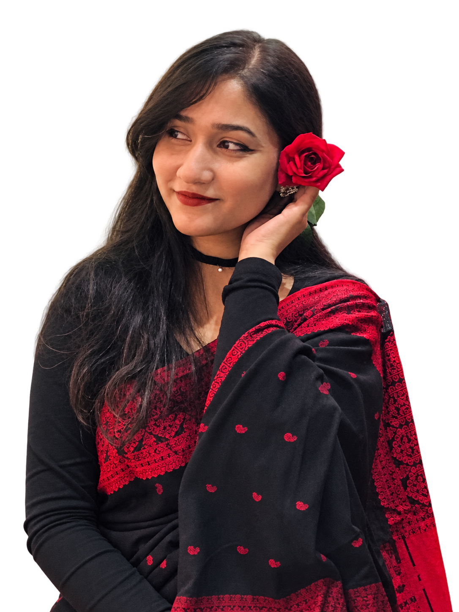

Selected look 05 / Hridita Huq
Crimson notes
Black & red sari
A black sari with a patterned red border and small red motifs. A dark blouse and a single red rose complete the look.
The look
Deep contrast
Crimson details stand out against a black base.
Patterned border
A rich red edge gives the drape its definition.
A single rose
One flower brings the colour back to the face.
The palette
Black / crimson / deep red

A dark canvas, with a note of crimson.